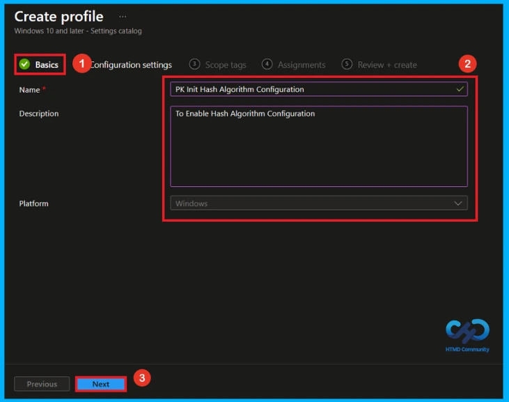
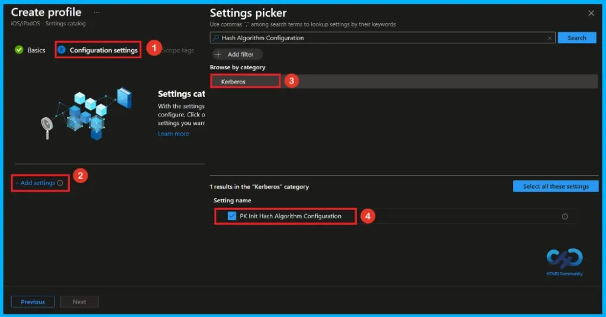
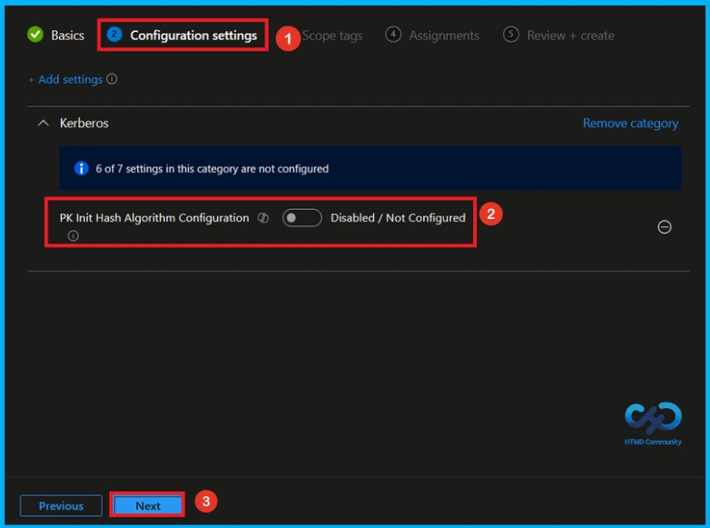
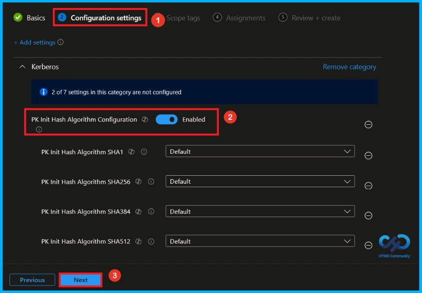
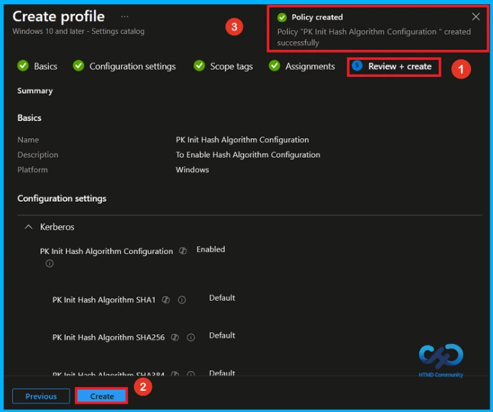
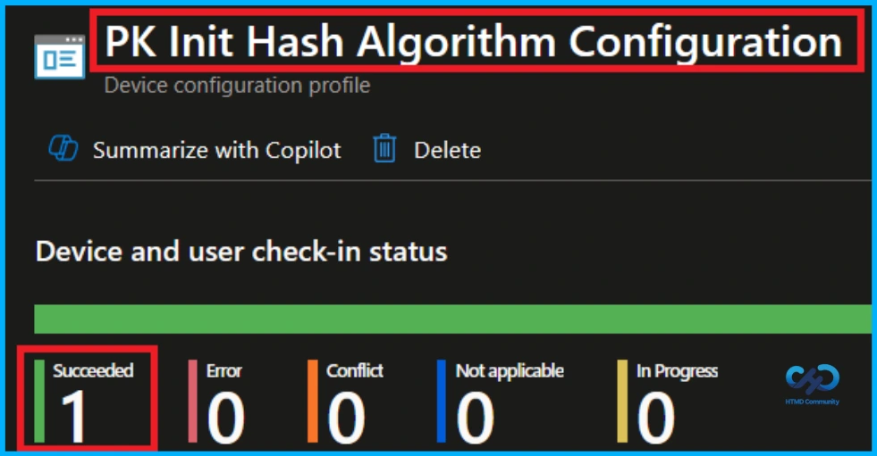
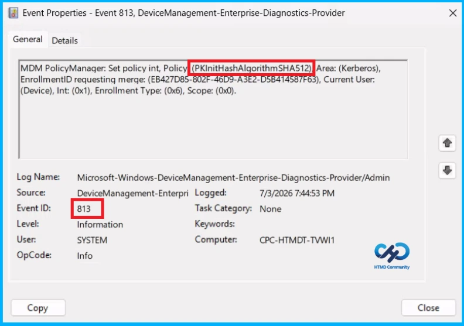
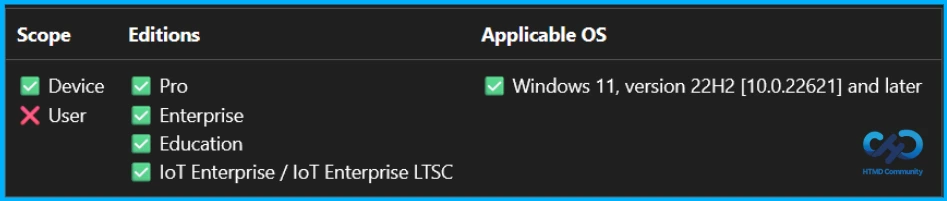
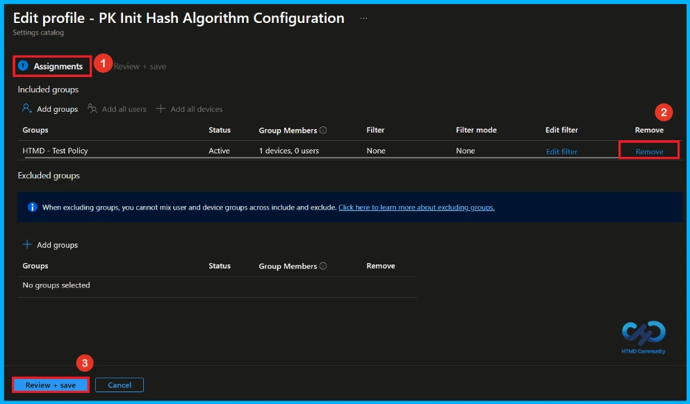
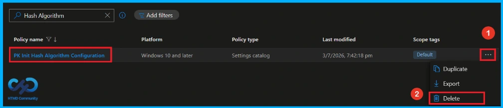

Key Takeaways
- Controls the hash and checksum algorithms used by the Kerberos client.
- You can choose Default, Supported, Audited, or Not Supported for each algorithm.
- Not Supported blocks the use of insecure algorithms.
- If the policy is disabled or not configured, all algorithms use the Default setting
Hey, let’s discuss about how use Intune to strengthen authentication security by managing Kerberos Certificate Hash Algorithms. This policy controls the hash or checksum algorithms used by the Kerberos client for certificate authentication. If you enable this policy, you can choose one of four settings for each algorithm: Default is the recommended setting, Supported allows the algorithm, Audited allows the algorithm and logs Event ID 206 when it is used, and Not Supported blocks the algorithm.
Table of Contents
Use Intune to Strengthen Authentication Security by Managing Kerberos Certificate Hash Algorithms
If you disable or do not configure this policy, all algorithms use the Default setting. Use the Audited setting to monitor algorithm usage before disabling it, and use Not Supported to prevent the use of insecure algorithms.
How to Create a Policy in Intune
To create a policy, the first step that you must do is to sign in to the Microsoft Intune Admin Centre. After clicking on the Device on the left side of the screen, select Configuration and then click Create and select New Policy.
Create a Profile
When you click on the New Policy, a box will appear in which you can specify the platform and profile type. From that, choose the platform as Windows 10 and later and profile type as Settings Catalog. Then, click Next to continue.
Basic Tab of Hash Algorithm Configuration Policy
In the Basics Tab, you can give an appropriate name and description. So you can identify the policy later by using its name. Giving the policy a Name is mandatory and Description is not important.
- Name – PK Init Hash Algorith Configuration
- Description – To Enable Hash Algorithm Configuration
- Click Next to continue.

Configure Hash Algorithm Configuration Policy
Here you can see that the +Add settings in a blue color, click on that. Here now you can see the settings picker. Search Hash Algorithm Configuration on the search bar or browse to the Kerberos category. Then, select PK Init Hash Algorithm Configuration policy.

Disable Hash Algorithm Configuration Policy
After selecting PK Init Hash Algorithm Configuration policy and closing the Settings picker, you will see it on the Configuration page. This setting PK Init Hash Algorith Configuration policy is disabled by default. If you want to continue, click Next.

Enable Hash Algorithm Configuration policy
If we enable or configure this policy, we can manage the PK Init Hash Algorithm Configuration by toggling the switch from left to right. Then, we can configure the required hash algorithms (SHA1, SHA256, SHA384, and SHA512). Finally, click the Next button to proceed.
- Default – Uses the recommended setting.
- Supported – Allows the algorithm to be used (may reduce security).
- Audited – Allows the algorithm and logs its usage for monitoring.
- Not Supported – Blocks the algorithm because it is insecure.

What is Scope Tag
Scope tags are used to control which administrators can see and manage this policy in the Intune admin center. In the Scope tags section, you can assign one or more scope tags to the policy so that only specific IT teams or administrators have access to it. To add a scope tag, click Select scope tags, choose the required tag, and then click Next.
Assign the Policy to Groups
In the Assignments section, click Add groups under Included groups and select the required user or device groups. Here, i selected the group HTMD – Test Policy and click the Next button to continue.
Final Step of Hash Algorithm Configuration Policy Creation
In the Review + Create tab, you can review a summary of all the information you entered earlier. This step allows you to verify each section to avoid any misconfiguration or policy issues. If changes are needed, you can go back using the Previous option. Once everything is correct, click Create to finish, and a notification will confirm that the policy has been created successfully.

Monitor Policy Deployment Status
To verify whether the policy has been applied successfully, sign in to the Microsoft Intune admin center and navigate to Devices > Configuration profiles. From the list, select the PK Init Hash Algorithm Configuration policy. This will open the policy overview page, where you can view a summary of its deployment status.

Client Side Verification
To confirm if a policy has been applied, use the Event Viewer on the client device. Go to Applications and Services Logs > Microsoft >Windows >Device Management > Enterprise Diagnostic Provider > Admin. From the list of policies, use the Filter Current Log option and search for Intune event 813.
MDM PolicyManager: Set policy int, Policy (PKInitHashAlgorithmSHA512) Area: (Kerberos),
EnrollmentID requesting merqe: (EB427D85-802F-46D9-A3E2-D5B414587F63), Current User:
(Device), Int: (0x1), Enrollment Type: (0x6), Scope: (0x0).

Configuration Service Provider (CSP)
The Policy Configuration Service Provider (CSP) is a feature used by organisations to manage and control settings on Windows 10 and 11 devices. It explains Description framework properties, Allowed values and Group policy mapping.
Description framework properties:
- Format – int
- Access Type – Add, Delete, Get, Replace
- Default Value – 0
| Value | Description |
|---|---|
| 0(Default) | Disabled / Not Configured. |
| 1 | Enabled |
Group policy mapping:
| Name | Value |
|---|---|
| Name | PKInitHashAlgorithmConfiguration |
| Friendly Name | Configure hash algorithms for certificate logon |
| Location | Computer Configuration |
| Path | System > Kerberos |
| Registry Key Name | Software\Microsoft\Windows\CurrentVersion\Policies\System\Kerberos\Parameters |
| Registry Value Name | PKInitHashAlgorithmConfigurationEnabled |
| ADMX File Name | Kerberos.admx |

How to Remove Assigned Group from Hash Algorithm Configuration Policy
If you need to remove a group from a policy assignment for security updates. Open the PK Init Hash Algorithm Configuration policy from the configuration tab and click on the edit button. Then, click on the Remove button. Click Review + Save after making the changes.
For detailed information, you can refer to our previous post – Learn How to Delete or Remove App Assignment from Intune using by Step-by-Step Guide.

How to Delete Hash Algorithm Configuration Policy from Intune
To delete PK Init Hash Algorithm Configuration policy, go to the Devices>Configuration and then search for the policy. Then the PK Init Hash Algorithm Configuration policy will appear on the screen. Click on the 3-dot menu and select the Delete option.

Need Further Assistance or Have Technical Questions?
Join the LinkedIn Page and Telegram group to get the latest step-by-step guides and news updates. Join our Meetup Page to participate in User group meetings. Also, join the WhatsApp Community and the Whatsapp channel to get the latest news on Microsoft Technologies. We are there on Reddit as well.
Author
Anoop C Nair has been Microsoft MVP from 2015 onwards for 10 consecutive years! He is a Workplace Solution Architect with more than 22+ years of experience in Workplace technologies. He is also a Blogger, Speaker, and Local User Group Community leader. His primary focus is on Device Management technologies like SCCM and Intune. He writes about technologies like Intune, SCCM, Windows, Cloud PC, Windows, Entra, Microsoft Security, Career, etc.